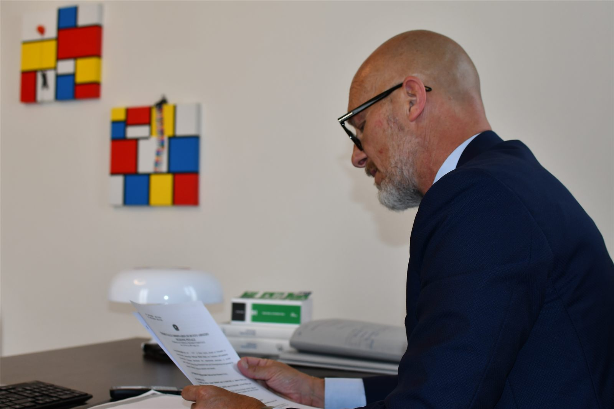
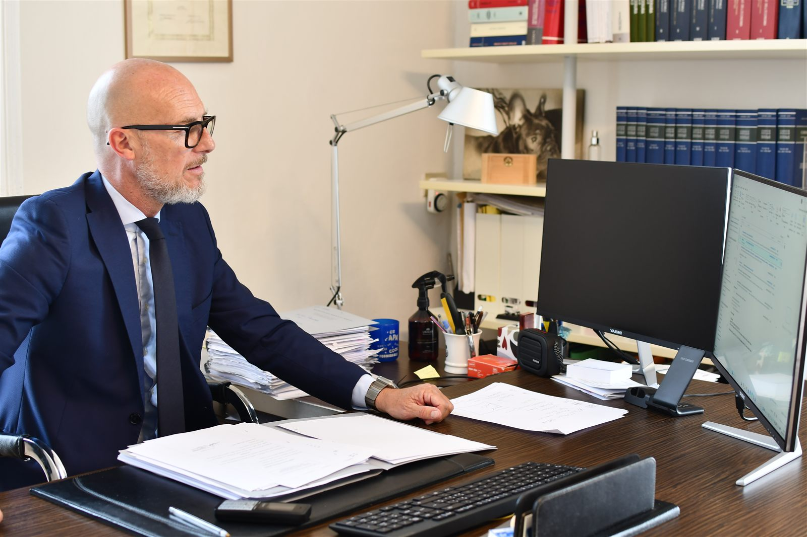
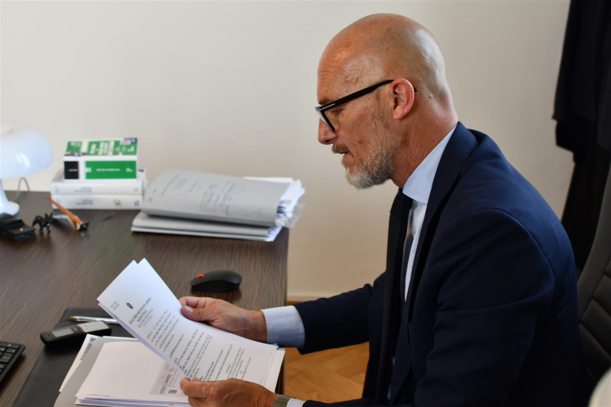

Avv. Luca Abbiati
Socio Fondatore · CassazionistaSocio fondatore dello Studio, l'Avvocato Luca Abbiati, nato a Busto Arsizio il 7 agosto 1973, è iscritto all'Albo dell'Ordine degli Avvocati di Busto Arsizio dal 26 novembre 2004.
È iscritto all'Albo speciale degli avvocati cassazionisti, abilitati al patrocinio presso la Suprema Corte di Cassazione, dal 20 gennaio 2017.
Da oltre vent'anni presta assistenza penale a persone fisiche e imprese coinvolte in procedimenti penali complessi, anche di rilevanza nazionale, offrendo difesa giudiziale e consulenza preventiva in ambito penale.
Diritto Penale · Cassazionista
C.F.: BBTLNT73M07B300Z
luca.abbiati@studiolegaleabbiati.it luca.abbiati@pec.studiolegaleabbiati.it


